Trailer v2 · pacote de produção Arte revisada e arquivos conferidos. O Claude fará a gravação e a montagem. Antes de gravar, integrar as duas branches de evolução e kits listadas no guia. Lendário: somente silhueta e rugido, sem nome.
Guia para o Claude · Revisão de arte · Manifesto e hashes
Prévia do lendário · uso público 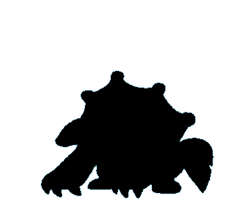
Efeitos 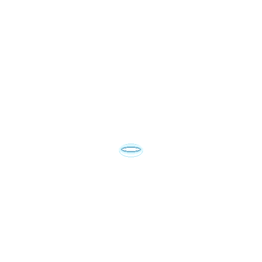
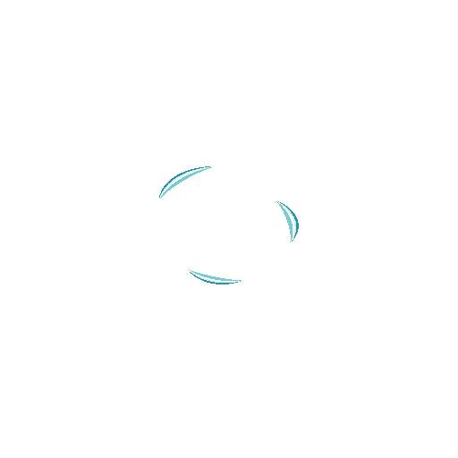
Áudio para escuta Trilha editada ·140s
Rugido separado ·2,9s
Arquivos finais 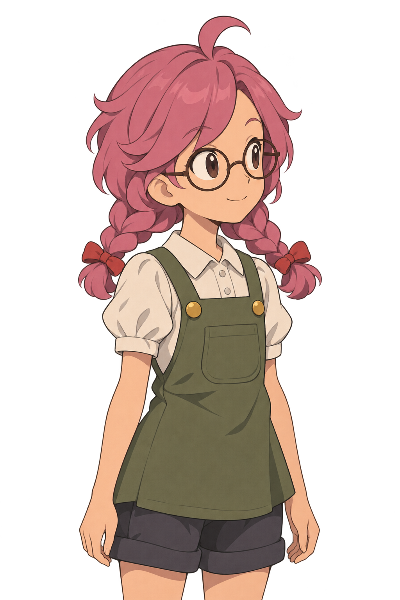
mikka 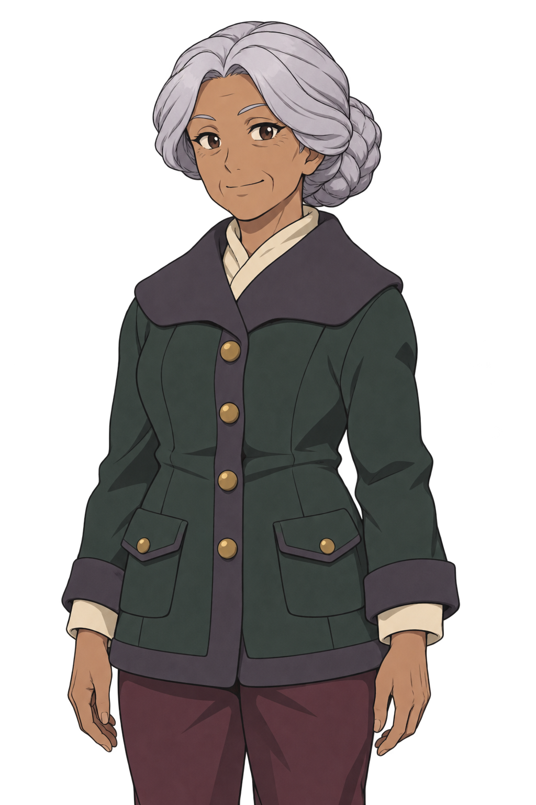
dona-neve 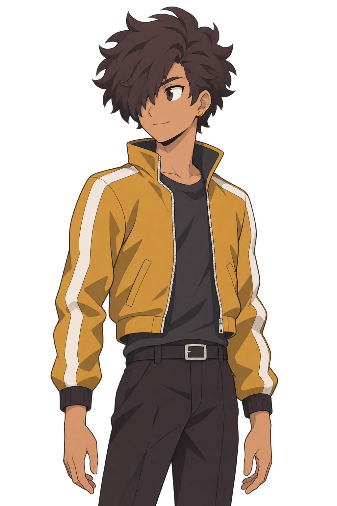
icaro 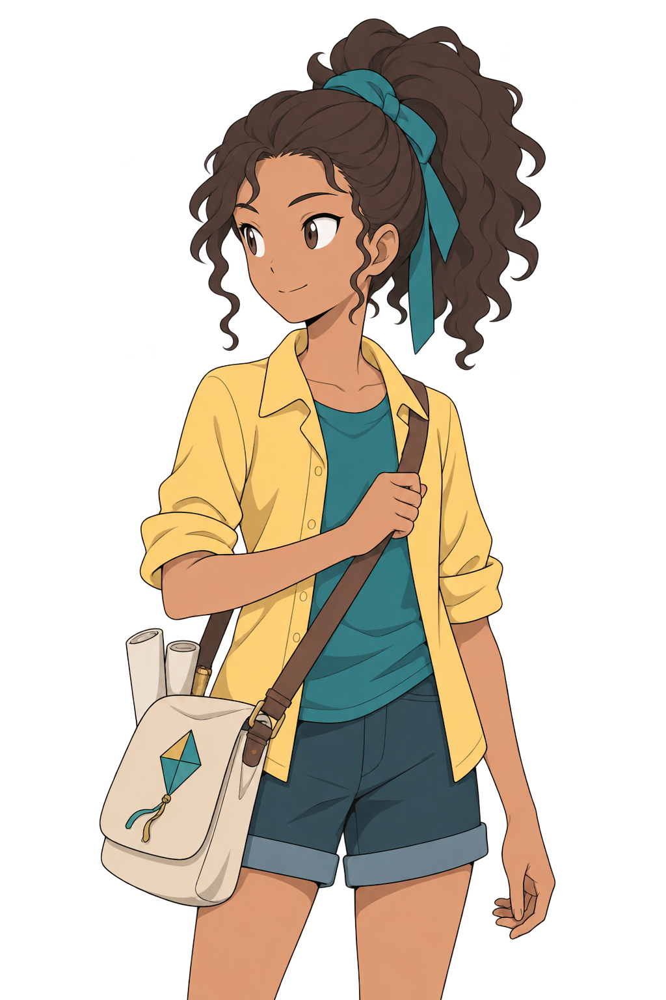
nina 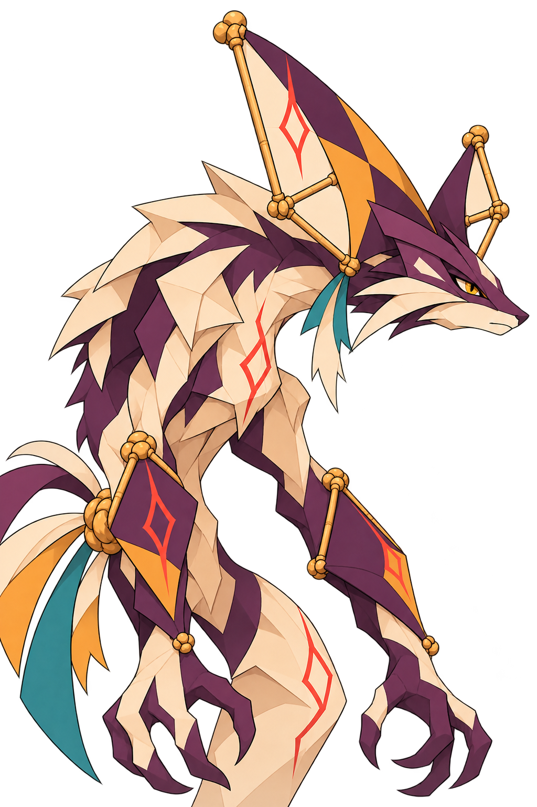
retalho 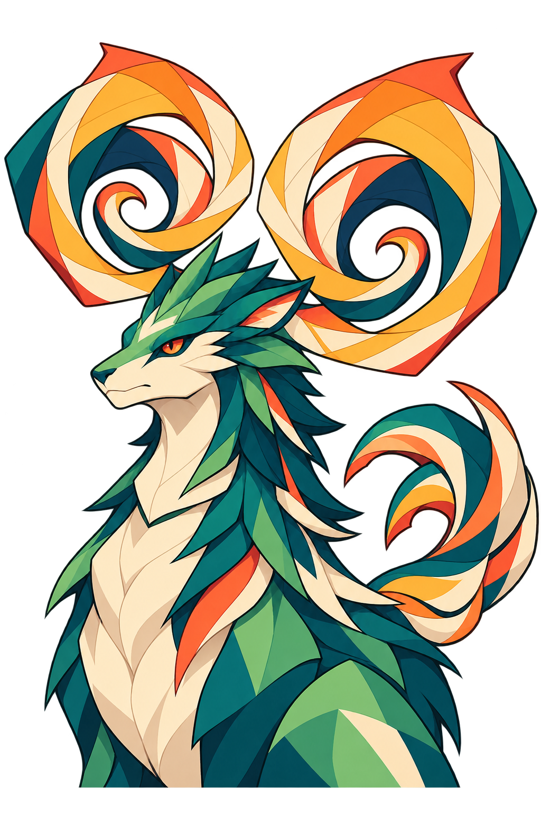
tufanocorte 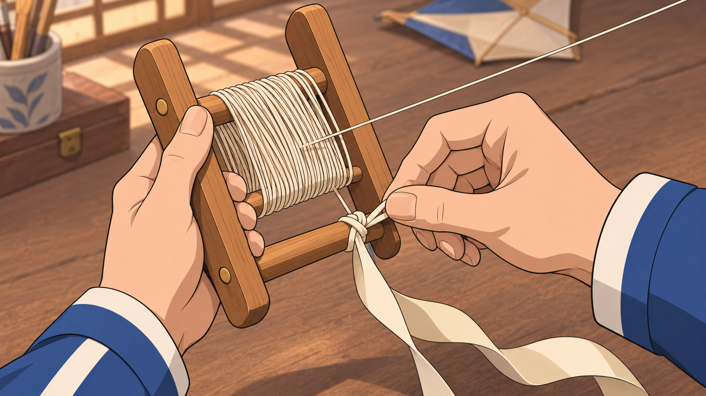
abertura-carretel 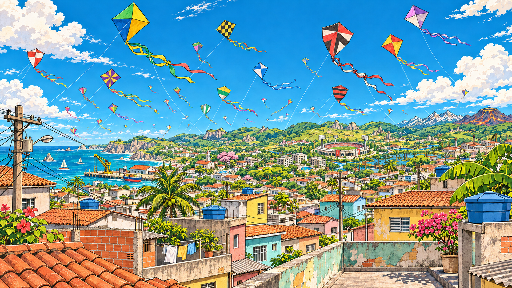
kronasta-ceu 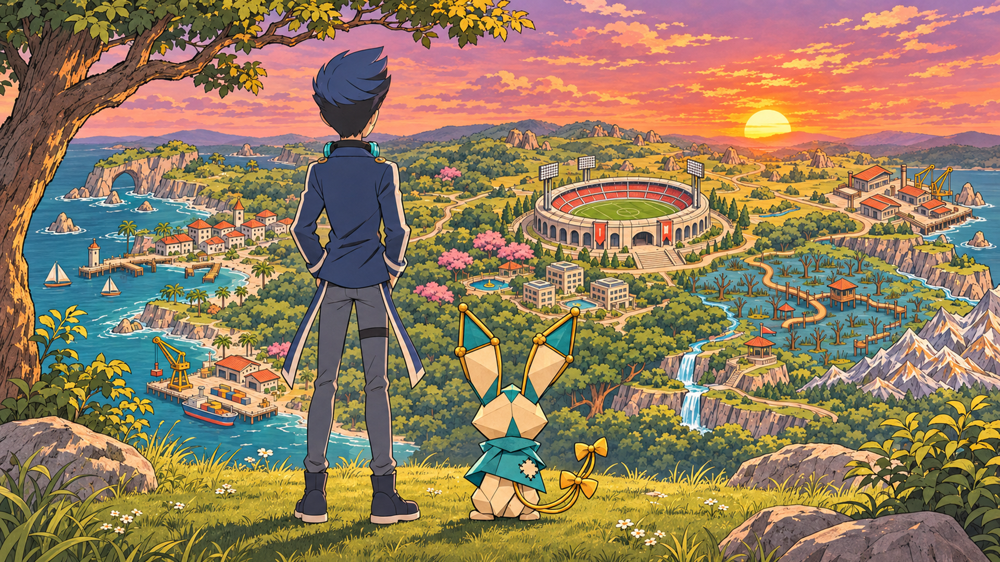
fecho-estadio 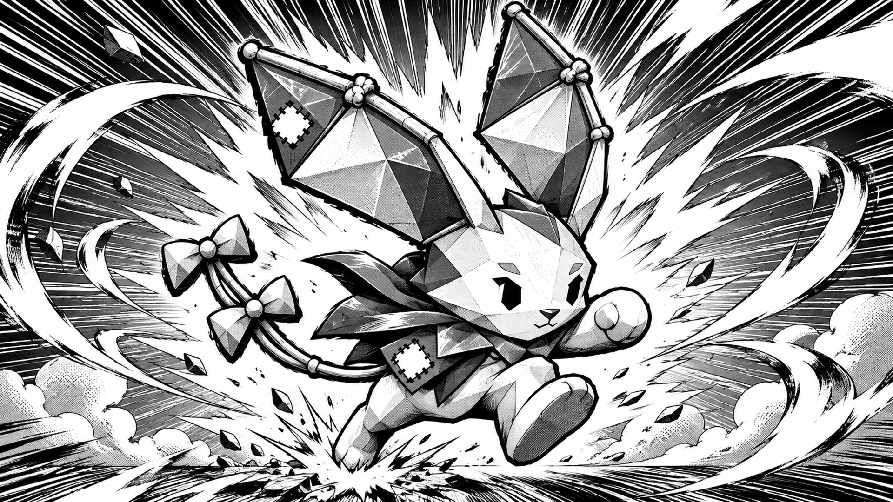
impact-especial-rabbito tsk 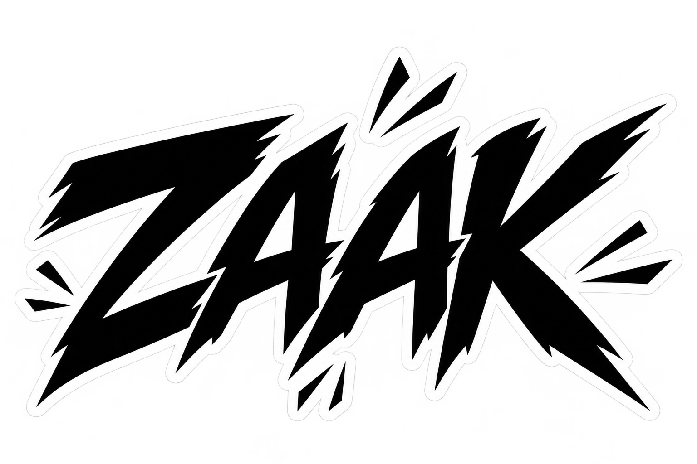
zaak fwush 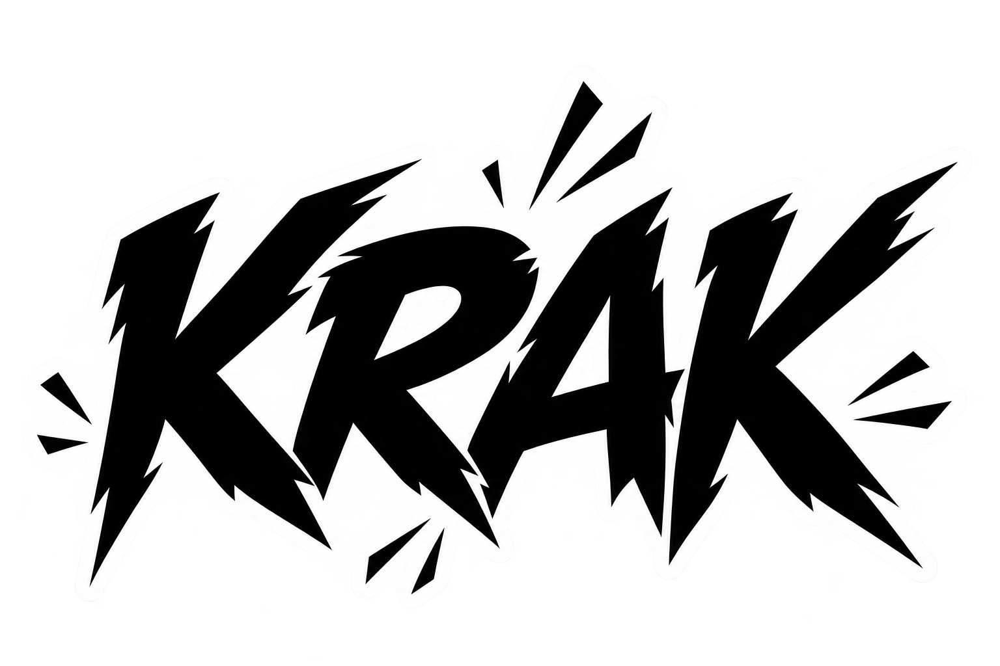
krak 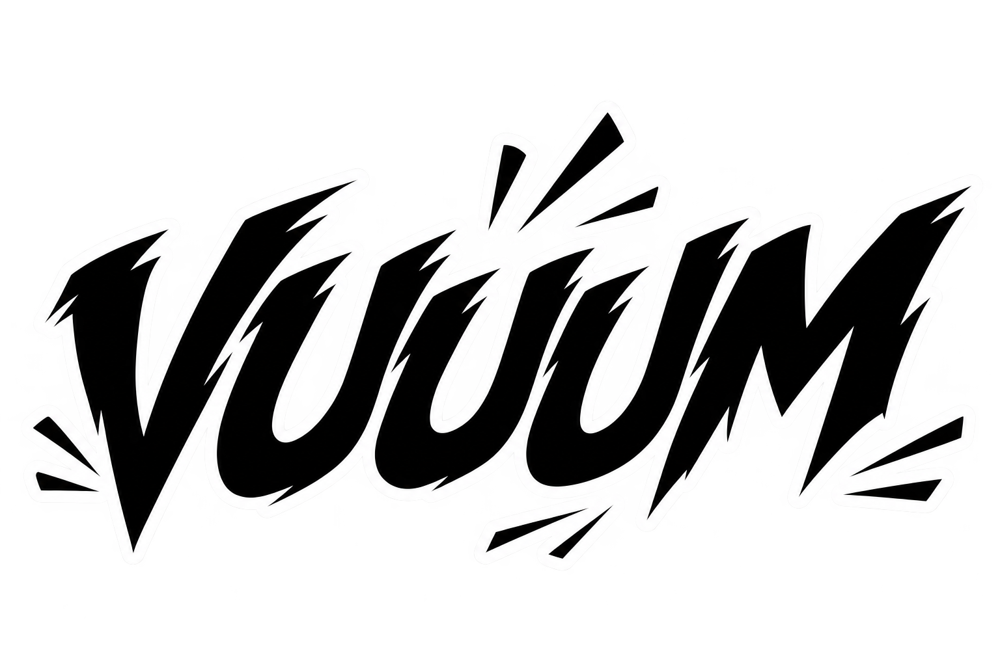
vuuum splash 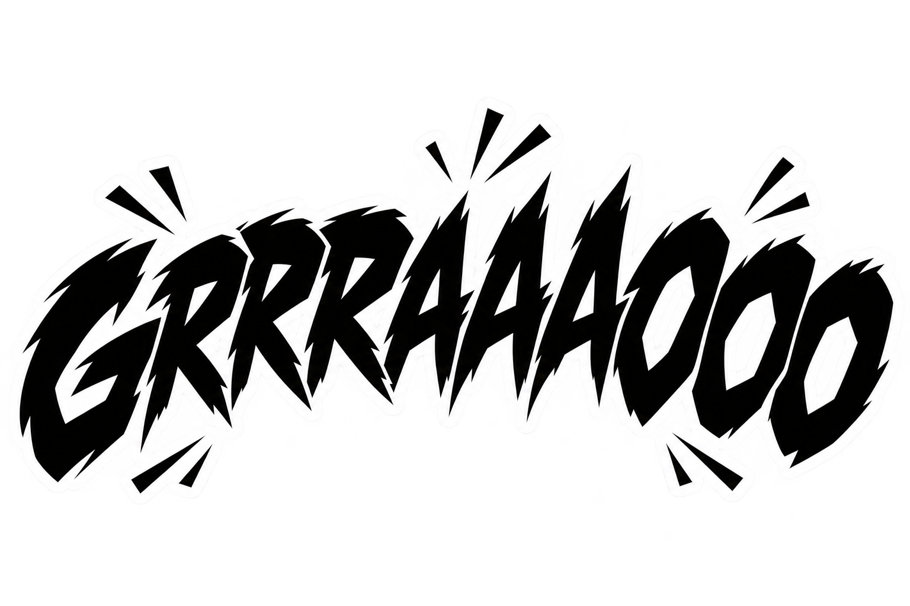
grrraaaooo linhas-velocidade-horizontal linhas-velocidade-radial 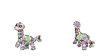
vertim · SW/NW 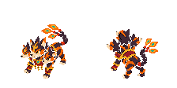
trincaguarda · SW/NW 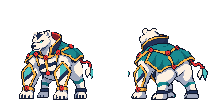
urso-polar-young · SW/NW 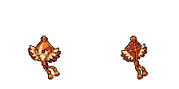
carcara · SW/NW 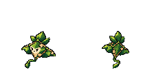
mata-verde · SW/NW 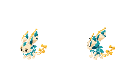
rabbito · SW/NW